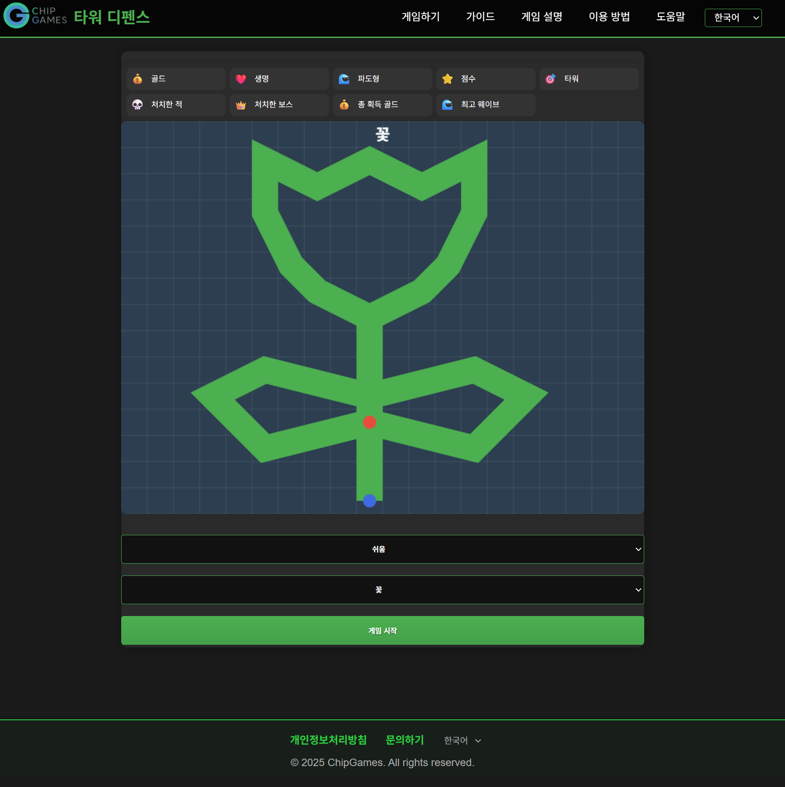
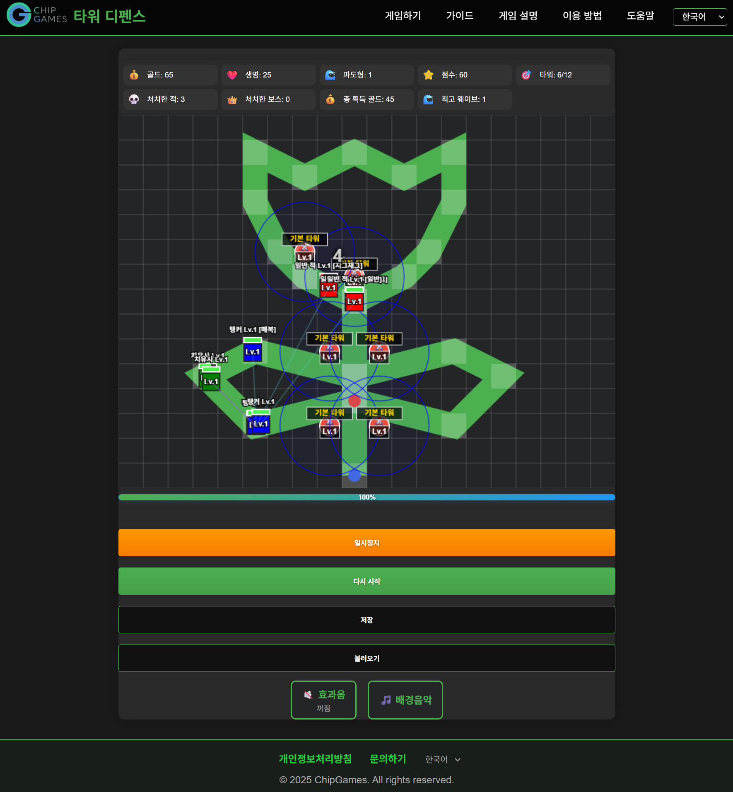
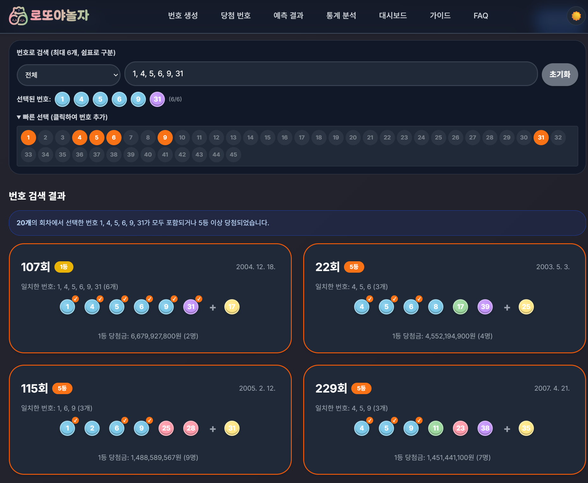
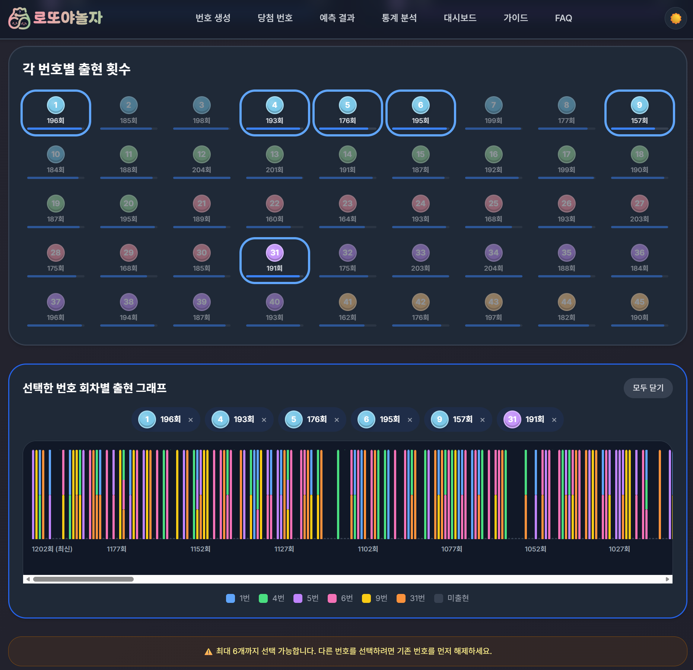
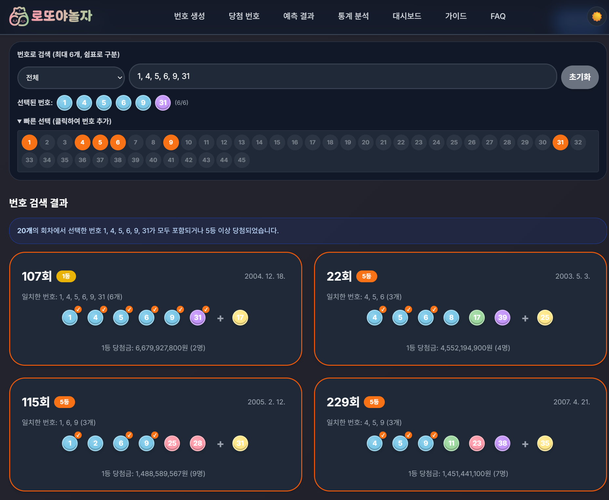
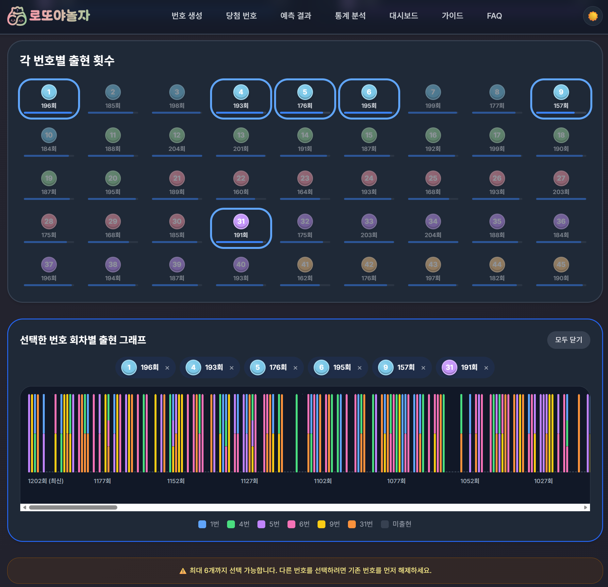
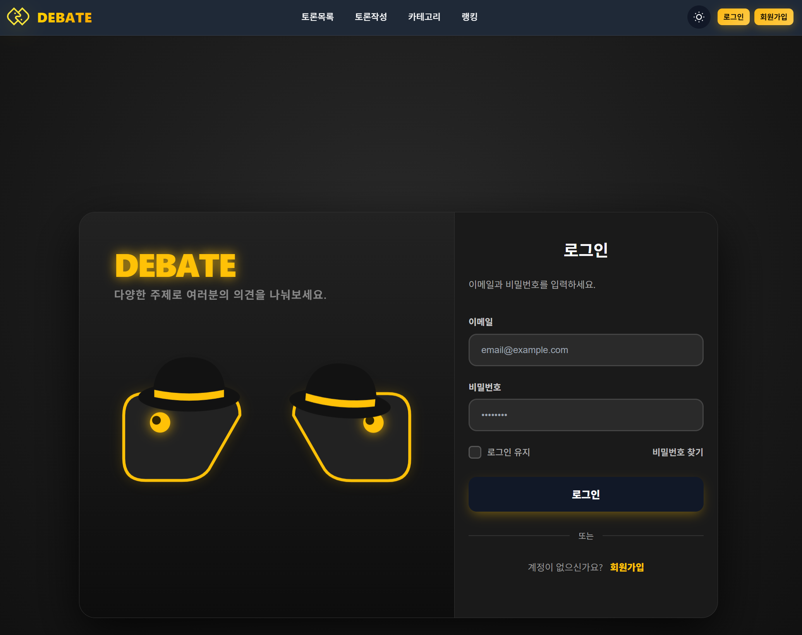
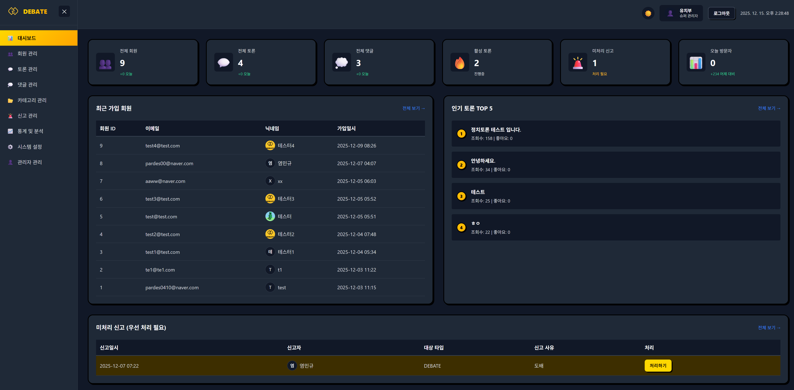
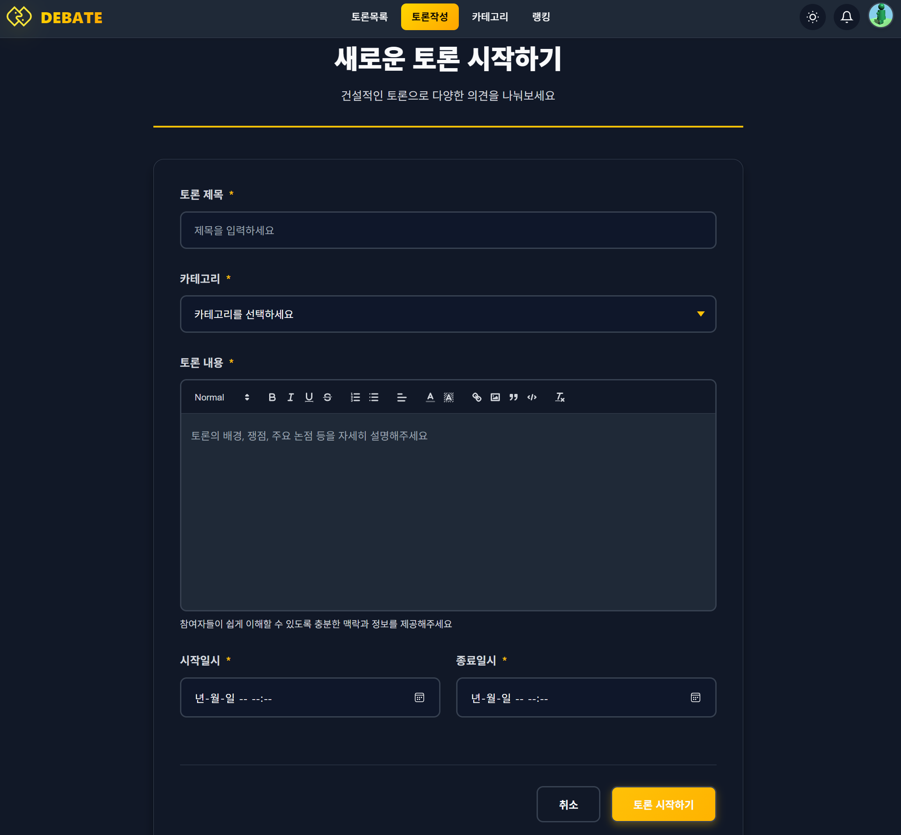

Personal Projects
타워 디펜스 게임
2025.06 - 2025.06개인 프로젝트
Cursor AI를 활용하여 개발한 웹 기반 타워 디펜스 게임입니다. 다양한 타워, 맵, 난이도, 특수 이벤트가 포함된 전략 시뮬레이션 게임입니다.
담당 업무
- 게임 전체 아키텍처 설계 및 개발
- Canvas API를 활용한 게임 렌더링 엔진 구현
- 타워 배치, 업그레이드, 적 유닛 AI 로직 개발
- 게임 밸런스 조정 및 난이도 시스템 설계
- 로컬 스토리지를 활용한 게임 데이터 저장/불러오기 기능
- 업적 시스템 및 통계 추적 기능 구현
- 반응형 웹 디자인 및 다국어 지원 (한국어/영어)
- Cursor AI를 활용한 효율적인 개발 프로세스 구축
기술적 도전과 해결
- 성능 최적화: Canvas 렌더링 최적화로 60fps 유지
- 게임 로직: 복잡한 타워-적 상호작용 알고리즘 구현
- 데이터 관리: 로컬 스토리지 기반 게임 상태 저장 시스템
- 반응형 디자인: 다양한 화면 크기에서 최적 게임 경험 제공
주요 성과
- 15종 이상의 맵과 9가지 타워로 다양한 게임플레이 제공
- 완전한 웹 기반 게임으로 별도 설치 없이 즉시 플레이 가능
- Cursor AI 활용으로 개발 시간 단축 및 학습 경험 확보
- GitHub Pages를 통한 무료 호스팅 및 배포


HTML5
CSS3
JavaScript
Canvas API
Cursor AI
로또 번호 생성기
2024.11 - 2024.11개인 프로젝트 (Cursor AI 활용)
통계 분석 기반의 지능형 로또 번호 추천 서비스입니다. 과거 당첨 번호 데이터를 체계적으로 분석하여 더 나은 번호 선택을 돕는 웹 애플리케이션입니다.
담당 업무
- Next.js 기반 풀스택 웹 애플리케이션 설계 및 개발
- 로또 당첨 번호 데이터 수집 및 저장 시스템 구축 (Firebase)
- 통계 분석 알고리즘 개발 (출현 빈도, 구간 분포, 패턴 분석)
- 세 가지 번호 생성 방식 구현 (랜덤, 통계 기반, 패턴 기반)
- React + TypeScript를 활용한 컴포넌트 기반 UI 개발
- Firebase를 활용한 서버리스 백엔드 구축
- 반응형 웹 디자인 및 모바일 최적화
- Cursor AI를 활용한 개발 효율성 향상
기술적 도전과 해결
- 데이터 분석: 대량의 당첨 번호 데이터를 효율적으로 분석하는 알고리즘 구현
- 실시간 업데이트: 매주 당첨 번호 자동 수집 및 통계 갱신 시스템
- 사용자 경험: 직관적인 UI/UX로 복잡한 통계 데이터를 쉽게 이해할 수 있도록 설계
- 서버리스 아키텍처: Firebase를 활용한 비용 효율적인 인프라 구축
주요 성과
- 회원가입 없이 무료로 사용 가능한 접근성 높은 서비스 제공
- 다양한 통계 분석 기능으로 사용자에게 유용한 정보 제공
- Firebase 기반 안정적인 서비스 운영
- TypeScript를 활용한 타입 안정성 확보 및 유지보수성 향상
 



HTML5
CSS3
JavaScript
React
TypeScript
Next.js
Firebase
Cursor AI
토론 플랫폼
2024.11 - 2024.12
JAVA(Spring Boot), React 교육 팀 프로젝트 (4명 + AI 활용)
온라인 토론 커뮤니티 플랫폼입니다. 사용자들이 다양한 주제에 대해 토론하고 의견을 교환할 수 있는 웹 서비스입니다.
담당 업무
- 팀 프로젝트에서 백엔드 및 인프라 구축 담당
- Spring Boot 기반 RESTful API 설계 및 개발
- WebSocket을 활용한 실시간 토론 및 의견 교환 기능 구현
- 사용자 인증 및 권한 관리 시스템 개발 (JWT 기반)
- AWS EC2, Ubuntu, nginx를 활용한 서버 인프라 구축 및 배포
- 데이터베이스 설계 및 최적화
- 프론트엔드 팀과의 API 연동 및 협업
- 서버 모니터링 및 성능 최적화
기술적 도전과 해결
- 실시간 통신: WebSocket을 활용한 실시간 메시징 시스템 구현
- 서버 인프라: AWS 기반 안정적인 서버 환경 구축 및 운영
- 보안: JWT 기반 인증 시스템으로 안전한 사용자 인증 구현
- 협업: 4명의 팀원과 Git을 활용한 효율적인 협업 프로세스 구축
- 배포: Linux 서버 환경에서 nginx를 활용한 안정적인 배포 시스템 구축
주요 성과
- 팀 프로젝트에서 백엔드 및 인프라 전반을 담당하여 안정적인 서비스 구축
- 실시간 토론 기능으로 사용자 간 활발한 소통 환경 제공
- AWS 기반 인프라로 확장 가능하고 안정적인 서비스 운영
- 팀 협업 경험을 통한 협업 능력 및 커뮤니케이션 스킬 향상
- 프로덕션 환경 배포 및 운영 경험 확보



Team Collaboration
HTML5
CSS3
React
JAVA(Spring Boot)
Web Socket
AWS
Linux(Ubuntu, nginx)
Cursor AI